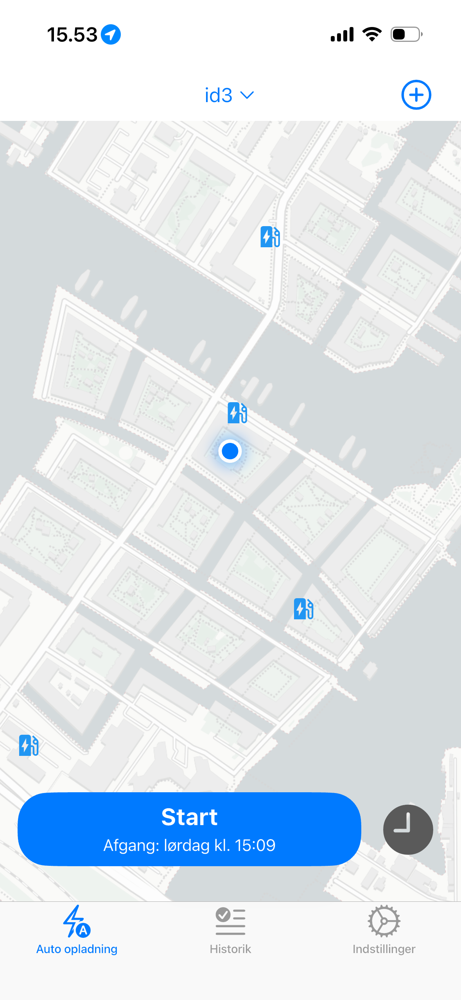
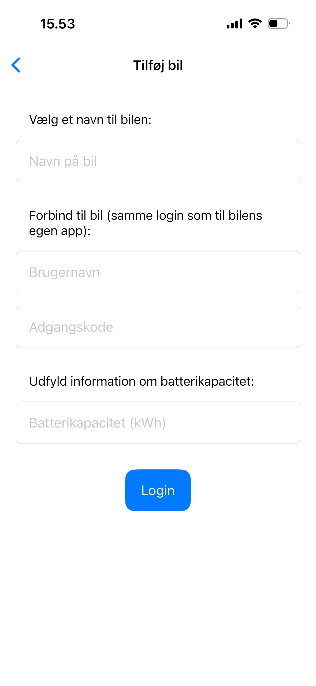

Intro
Bilstrøm appen er designet til at være et letvægtsapp som er nem bruge og som ikke har alle mulige unødvendige funktioner. For at være sikker på at alle nemt kan bruge appen har jeg lavet denne guide til hvordan funktionerne i appen bruges.
Trin 1 - Forbind til bilen

Klik på Plus-symbolet oppe i højre hjørne for at gå til login siden.
Trin 2 - Login via portalen

Udfyld følgende info:
- Vælg et kaldenavn til din bil
- Skriv brugernavn og adgangskode til din VW-app for at forbinde til bilen
- Angiv batterikapaciteten i kWh. Dette bruge til at beregne ladeplanen og kan findes i bilens parpirer.
Trin 3 - Brug appen

Når du har logget ind kan du sætte bilen til opladning. Når bilen oplader, kan du vælge et afgangstidpunkt og trykke Start så begynder oplade planen. Bemærk at smartopladning kræver abonnement. Abonnement kan startes under Indstillinger.